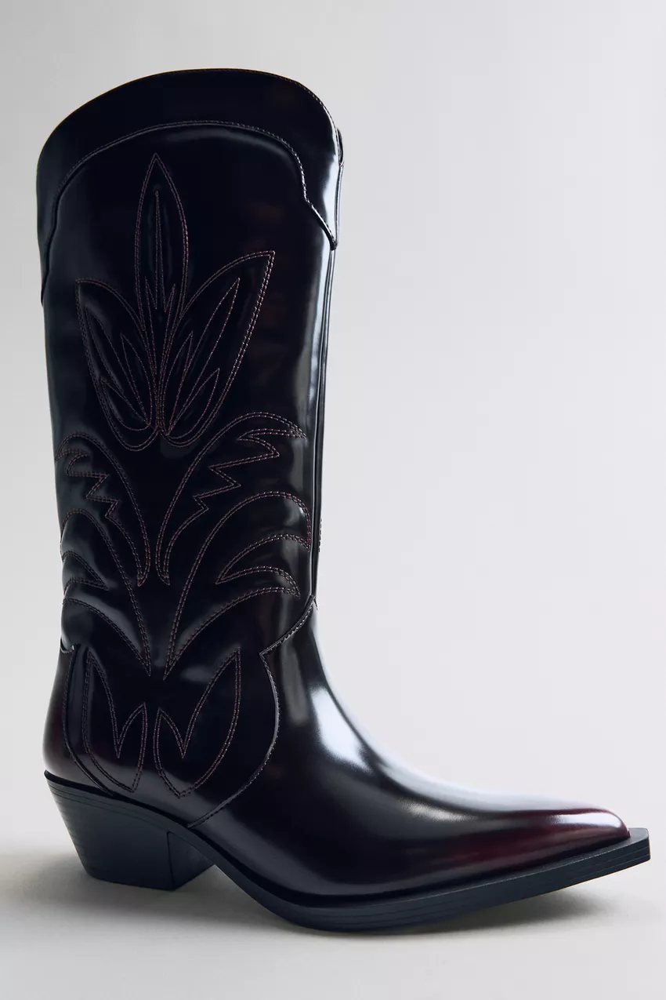
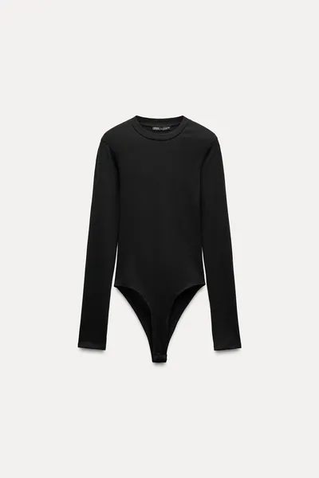
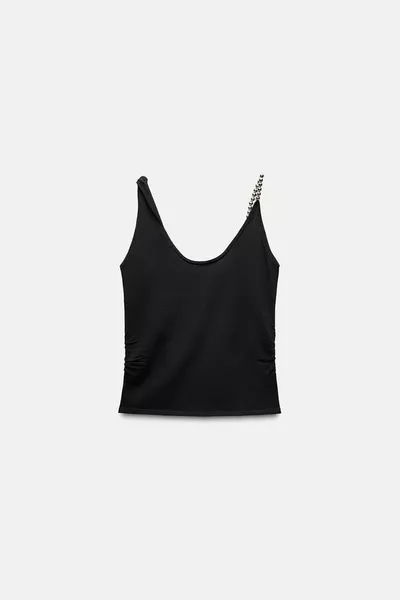
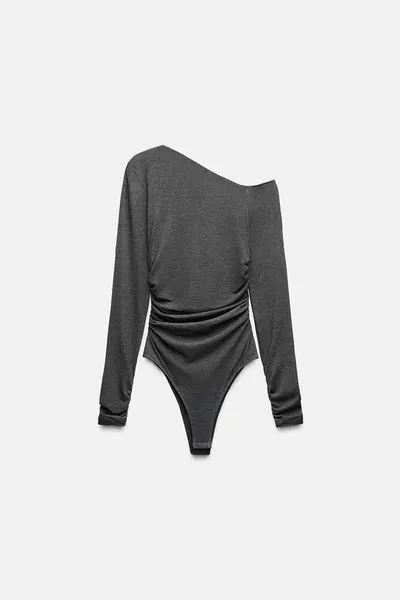
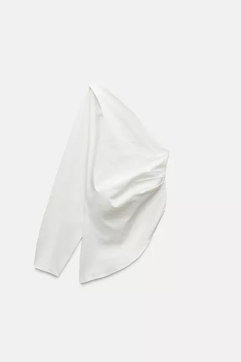
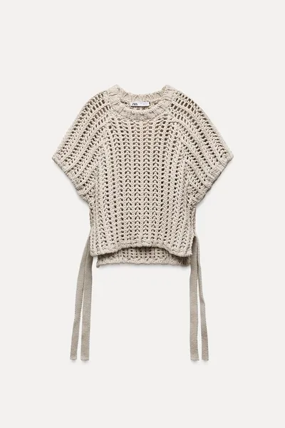

TEXTURED KNIT TOP
39.95 EUR
Textured knit top with a V-neckline and sleeveless design.
Beige | 0021/108
COMPOSITION, CARE & ORIGIN
We work with monitoring programmes to ensure compliance with our social, environmental and health and safety standards for our products. To assess compliance, we have developed a programme of audits and continuous improvement plans.
OUTER SHELL
- 40% polyester
- 35% acrylic
- 16% wool
CAN WE HELP YOU?
YOU MAY BE INTERESTED IN
     